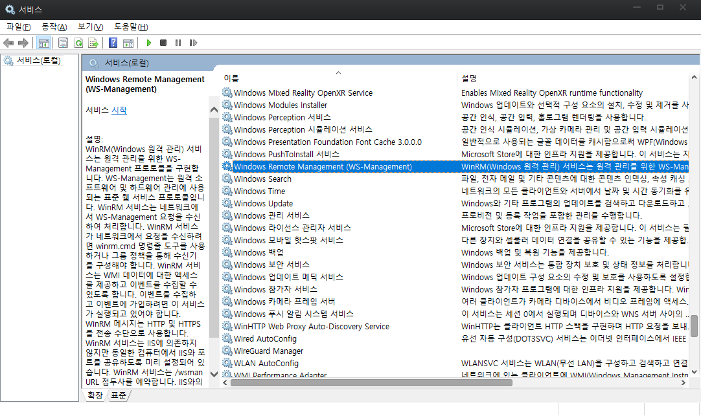
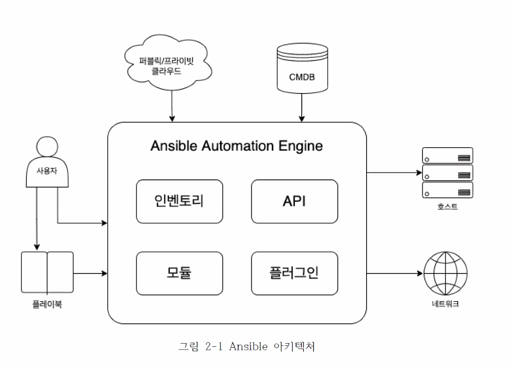

2. Ansible 개요
실습
2.1 Ansible 이란?
- 네트워크 장비를 다루는게 주된 기능이여
- OpenSSH 를 사용하여 에이전트 없이 호스트를 관리함
- ansible이 설치되는 엔진은 반드시 유닉스 기반이어야함
- ssh 기본 인증 사용 passwd or key
- 필요한 경우 외부 인증 서버 연동 가능(kerberos, LDAP, MS active Directory 등)
2.2 용어
1) 제어노드
salt, puppet, chef의 서버와는 결이 다르다.
salt, puppet, chef는 별도의 데이터 베이스에
모든 작업을 저장하기 때문에 서버가 죽으면 문제가 발생하는데
Ansible은 분산형 아키텍쳐이고 노드에 별도의 데이터를 저장하지 않으므로
제어노드의 사망과 상관없이 Ansible 만 설치 되어 있으면 다 할수 있음
Ansible에서는 윈도우 호스트를 지원할 생각 없다고 예전에 얘기했음.
심경의 변화가 있지 않는 한.. 지원 안할 듯..
그래도 윈도우가 제어노드가 될 순 없지만 관리 대상은 될 수 있음
2) 관리 노드
모든 대상이 될 수 있음. Windows 도 될 수 있음.
WinRM (Windows Remote Management) 라는 애를 깔아서 관리가능.

3) 인벤토리
관리 노드는 반드시 인벤토리에 있어야만 관리할 수 있으며 단순한 텍스트 파일이다.
/etc/ansible/hosts 에서 관리
4) 플러그인
- 매우 다양 하다 그중에 많이 쓰이는 것들
Become : 권한 상승
Connection : 연결 관리
Netconf : 네트워크 장비 다룸
Vars : 변수들 관리
등등...
5) 모듈
플레이북에다가 모듈의 동작플레이북은 하나이상의 플레이를 가지고 있어야 함
Python 코드 단위임.
약 3000개의 엄청 많은 모듈들이 존재함
6) 작업
모듈의 순서
작업은 하나의 모듈을 가지고 있다. (작업과 모듈은 1:1)
7) Ad-hoc 명령
하나의 모듈만 실행 가능 간단하게 테스트 용도로 사용
8) 플레이
플레이는 하나이상의 작업을 가지고 있다.
YAML 파일로 작성
9) 플레이북
결국 이녀석이 최종 보스
플레이북은 하나이상의 플레이를 가지고 있어야 함
ansible-playbook 명령으로 실행
2.3 아키텍쳐

Ansible Automation Engine === Ansible Engine === Ansible
- 인벤토리 (/etc/ansible/hosts 파일 또는 CMDB에서 받아 옴)
인벤토리는 관리 대상이 되는 호스트나 네트워크 장비(시스템의 목록)을 가지고 있는 것 - static 인벤토리
직접 작성/etc/hosts파일 처럼 text 파일을 직접 작성
그런데 요즘의 클라우드 환경에서는 관리 대상의 목록이 자주 바뀌고 라이프사이클이 짧다.
그럴때는 정적 인벤토리로 관리가 너무 귀찮고 힘도로 dynamic 인벤토리
관리 대상의 목록이 자주 바뀌기 때문에 다른 프로그램으로부터 목록을 가져옴.
회사의 cmdb(자산 데이터베이스) 같은 곳에서 동적으로 가져올 수 있다.API
- 모듈
반드시 인벤토리에 정의되어있는 시스템만 관리한다. - 플러그인
인벤토리, 모듈이 가장 중요함 그중에 모듈이 더 중요!!
- 실행하는 방법
- ad-hoc 명령어
하나의 모듈을 실행 시킨다. 2개의 모듈은 안된다. 단 1개만! - Playbook
YAML 파일을 사용해서 모듈을 정의함.
Play : 여러 호스트 들에 대한 role, task 등을 정의
Playbook : 여러 Play 들의 모음
마이클 디한이 핵심 개발자이구 Ansible 웍스에서 Ansible을 만들었어 그리고 레드헷에 인수됨
마이클 디한이 야구를 좋아해가지고 야구 용어가 많음
Ansible 2.9버전을 기점으로 (2.10버전부터)버저닝 방식이 좀 변경되었음
https://docs.ansible.com/ansible/latest/installation_guide/intro_installation.html
2.1 ~ 2.9 버전까지의 Ansible 핵심 기능은 같음
2.9 ansible
2.10 ansible-base 3 > 새로운 기능 추가(Collection) 이번 과정에선 다루지 않음
2.11 ansible-core 4
2.12 ansible-core 5
2.x : 엔진의 버전
ansible-x : 버저닝 분리
관리 노드는 SSH 통신과 SFTP 가 가능해야 함
2.10 부터는 python3 버전만 지원
2) Ansible 설치
# sudo apt-add-repository -y -u ppa:ansible/ansible # 책에 나왔는데.. 할 필요없데...
# sudo apt install -y ansible
ansible --update
자기 자신이 관리 대상이자 컨트롤 노드가 될 수 있음
그러나 별도의 관리 대상이 있으면 좋을 듯
3) Ansible 명령 쉘 자동완성
sudo apt install -y python3-argcomplete
sudo activate-global-python-argcomplete3
4) Ansible Lint 설치
sudo apt install -y ansible-lint
exec bash
virtualBox 설치
https://www.virtualbox.org/wiki/Linux_Downloads

lsb_release -a
deb [arch=amd64] https://download.virtualbox.org/virtualbox/debian focal contrib
wget -q https://www.virtualbox.org/download/oracle_vbox_2016.asc -O- | sudo apt-key add -
wget -q https://www.virtualbox.org/download/oracle_vbox.asc -O- | sudo apt-key add -
sudo apt-get update
sudo apt-get install virtualbox-6.1
vagrant 설치
가상화 쉽게 할 수 있도록 도와주는 도구 코드 기반으로 원하는 인프라를 배포 해준다.
sudo apt install vagrant
vagrant 사용(해당 명령어는 Vagrantfile이 있는 위치에서)
https://app.vagrantup.com/boxes/search
mkdir -p ~/vagrant/test
cd ~/vagrant/test
vagrant init # Vagrant 초기화 Vagrantfile 이 생김
Vagrantfile 열어서 다음 부분 수정
config.vm.box = "ubuntu/hirsute64"
- 가상머신 생성
vagrant up - 가상머신 종료
vagrant halt - 가상머신 상태
vagrant status - ssh 접속
접속 후에 prompt를 잘 봐야함
vagrant ssh - 재부팅
vagrant reload - Vagrant 삭제
vagrant destroy - 노드 2개 돌려보자!!
# -*- mode: ruby -*-
# vi: set ft=ruby :
Vagrant.configure("2") do |config|
# node1 VM
config.vm.define "node1" do |config|
config.vm.box = "ubuntu/focal64"
config.vm.provider "virtualbox" do |vb|
vb.name = "node1"
vb.cpus = 2
vb.memory = 2000
end
config.vm.hostname = "node1"
config.vm.network "private_network", ip: "192.168.200.101"
end
# node2 VM
config.vm.define "node2" do |config|
config.vm.box = "ubuntu/focal64"
config.vm.provider "virtualbox" do |vb|
vb.name = "node2"
vb.cpus = 2
vb.memory = 2000
end
config.vm.hostname = "node2"
config.vm.network "private_network", ip: "192.168.200.102"
end
# Enable SSH Password Authentication
config.vm.provision "shell", inline: <<-SHELL
sed -i 's/ChallengeResponseAuthentication no/ChallengeResponseAuthentication yes/g' /etc/ssh/sshd_config
sed -i 's/archive.ubuntu.com/mirror.kakao.com/g' /etc/apt/sources.list
sed -i 's/security.ubuntu.com/mirror.kakao.com/g' /etc/apt/sources.list
systemctl restart ssh
SHELL
end